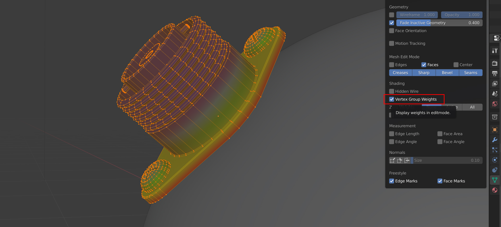

Options
Options Panel in the bottom left of the viewport
Presets
You can add or remove preset configurations from the tool here by pressing the + or - keys, or reset the tool to its default parameters.
Source Object
The following controls the parameters of how the source object is applied:
Method
Choose between Grid Mode or Shrinkwrap Mode.
Gradient Effect
This creates a vertex group which automatically weights the vertices at the bottom so the effect is less exagerated at the top:

The add-on allows you to control the influence of the deformation. In this case, we do not want the threads of the screws to be affected, so we reduce the End parameter so that the effect finishes towards the bottom of the object.
Start/End

Start/End controls
This controls when the gradient effect of the vertices starts and ends.
A value of 0.0 is at the bottom of the object, and a value of 1.0 is at the top.
Lowering the value of the end below 1.0 will stop the deformation towards the bottom of the object, and higher values will extend the weight beyond the top of the object. Increasing the start value will start the weighting higher up the object.

The default vertex group weighting, where the effect is gradually reduced towards the top (Start=0.0, End=1.0)

Vertex group weighting where the start point has been increased so the effect covers the lower part of the object entirely (Start=0.45, End=0.55)

A lower vertex group weighting, where the effect is gradually reduced further towards the bottom (Start=0.0, End=0.1)

A higher vertex group weighting, where the effect is gradually reduced beyond the top of the object (Start=0.0, End=2.0)
Tip
Visualise a vertex group in Edit Mode by selecting “Vertex Group Weights” in the overlays panel:
Blend Normals
This will blend the normals of the source object with the target object, creating a smoother transition between the two object surfaces:

Some simple ‘horns’ applied using the add-on. They are all separate objects.

Here the normals of the same ‘horn’ objects are blended with the normals of the head. They remain separate objects.
This effect is achieved by using a Data Transfer Modifier on the Source Object.
Start/End (Blend Normals)
Start/End controls for normal blending
As with the Start/End controls for the Gradient Effect, this controls which face normals are affected.
Blend Whole Object
This will blend all of the object’s normals regardless of the gradient effect.
Add Simple Subdivisions
This adds a Subdivision Surface modifier to the source object, set to ‘simple’, in case you wish to quickly subdivide the mesh when conforming the object.
Subdivisions: The number of subdivisions to use in the modifier.
Align Object to Face
This will automatically align the source object to the face of the target object it is being applied to if it is not already.
Collapse Modifiers
This will collapse the existing modifiers on the source object if they are interfering with the conform effect.
Deform Modifier Position
This will change the position of the deformation modifier (Either Surface Deformation of ShrinkWrap) on the source object:
Start: At the start of the modifier stack.
Before: This will place the modifier just before a specified modifier. Selecting the option will allow you to specify which modifier.

End: At the start of the modifier stack.
Grid Object
This controls the nature of the deformation grid used in Grid Mode. It is a regular blender object, parented to the source object, but is configurable by the add-on:
Hide Grid
By default, the deformation grid is hidden but it can be displayed if you wish to configure it:

The deformation grid is revealed!
Grid Subdivisions

Subdividing the grid increases the resolution of the deformation.
The number of vertices in the grid. If you are deforming over particularly smoothed or high resolution meshes, increasing this number can be useful.
Grid X/Y

Grid moved in X direction.
Move the grid’s X/Y position.
Grid Scale X/Y

Scale the influence of the grid.
Scale the grid in the X/Y direction.
Grid Rotation

Grid rotated on surface.
Rotate the grid over the surface.
Interpolation Falloff
Used on the Surface Deform Modifier for the grid. From the documentation:
“How much a vertex bound to one face of the target will be affected by the surrounding faces (this setting is unavailable after binding). This essentially controls how smooth the deformations are.”